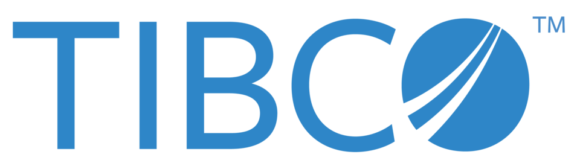

Tibco Software
Tibco Software는 미국 팰로앨토에 본사를 둔 기업용 소프트웨어 회사로, 1997년 Vivek Ranadivé가 설립했다. 현재는 Cloud Software Group의 사업 부문이다.
최종 업데이트

Tibco Software는 어떤 브랜드인가
Tibco Software는 기업용 소프트웨어를 제공하는 회사이다. TIBCO는 The Information Bus Company의 약칭으로, 기업이 정보를 실시간으로 받아 대응하도록 돕는 소프트웨어에서 출발했다.
초기에는 금융 부문을 주로 지원해 금융 거래 처리의 자동화에 쓰였고, 1999년에는 에너지와 반도체 제조 등 다른 산업으로 활용 범위가 넓어졌다. 본사는 팰로앨토에 있으며 북미, 유럽, 아시아, 중동, 아프리카, 남미에 사무소를 두고 있다.
2014년 Vista Equity Partners에 인수되었고, 2022년 Citrix Systems와 합병되어 Cloud Software Group이 출범하면서 그 사업 부문이 되었다.
Tibco Software는 어떻게 시작되고 성장했나
TIBCO는 1997년 Vivek Ranadivé가 Reuters Holdings의 자회사로 설립했다. Ranadivé는 이전 회사 Teknekron Software Systems에서 정보 버스 소프트웨어를 개발했으며, 이 회사를 1994년 Reuters에 매각했다.
1997년 후반에는 Microsoft와 푸시 기술 개발에 협력한 13개 회사 중 하나가 되었다. 1999년 7월 14일 기업공개를 했고, 닷컴 버블 붕괴 이후에도 살아남아 2001년 USA Today가 꼽은 기술기업 50개 지수에 올랐다.
2011년에는 고객이 4,000곳, 직원이 2,500명으로 늘었다.
Tibco Software의 브랜드 아이덴티티는 무엇인가
실시간 정보 처리를 위한 정보 버스 소프트웨어에서 출발해 기업 통합과 데이터 분석 소프트웨어로 확장한 기업용 소프트웨어 회사이다.
Tibco Software의 대표 제품과 서비스는 무엇인가
제품은 기업 애플리케이션 통합, 데이터 통합, 메시징, 이벤트 처리, 데이터 가상화, 마스터 데이터 관리, API 관리, 비즈니스 프로세스 자동화 기능을 제공한다. 2007년 비즈니스 인텔리전스 소프트웨어 회사 Spotfire를 인수했다.
보안 관리 플랫폼 LogLogic, 비즈니스 소프트웨어 업체 JasperSoft, 스트리밍 데이터 분석 회사 StreamBase Systems도 인수했다. 2015년에는 Intel의 API 관리 솔루션 Mashery 인수를 발표했고, 2017년에는 데이터 사이언스 플랫폼 Statistica 인수를 발표했다.
Tibco Software는 지금 어떤 상태인가
2014년 12월 Vista Equity Partners에 인수된 뒤 Murray Rode가 Ranadivé의 뒤를 이어 CEO가 되었고, 2019년에는 Dan Streetman이 CEO를 이어받았다. 2021년 1월 데이터·분석 회사 Information Builders를 인수했다.
2022년 9월 Vista와 Elliott Investment Management가 Citrix Systems를 인수해 TIBCO와 합병시켜 Cloud Software Group을 만들었고, Tom Krause가 새 회사의 CEO로 임명되었다. 현재 TIBCO는 Cloud Software Group의 사업 부문이다.
Tibco Software 로고는 어떻게 변해왔나
자주 묻는 질문
Tibco Software는 어느 나라 브랜드인가요?
Tibco Software는 미국의 기술·전자 브랜드입니다.
Tibco Software는 언제 설립되었나요?
Tibco Software는 1997년 설립되었습니다.
Tibco Software의 브랜드 아이덴티티는 무엇인가요?
실시간 정보 처리를 위한 정보 버스 소프트웨어에서 출발해 기업 통합과 데이터 분석 소프트웨어로 확장한 기업용 소프트웨어 회사이다.
Tibco Software의 대표 제품은 무엇인가요?
제품은 기업 애플리케이션 통합, 데이터 통합, 메시징, 이벤트 처리, 데이터 가상화, 마스터 데이터 관리, API 관리, 비즈니스 프로세스 자동화 기능을 제공한다.
Tibco Software는 어느 기업이 소유하고 있나요?
2014년 12월 Vista Equity Partners에 인수된 뒤 Murray Rode가 Ranadivé의 뒤를 이어 CEO가 되었고, 2019년에는 Dan Streetman이 CEO를 이어받았다.
Tibco Software의 창업자는 누구인가요?
Tibco Software의 창업자는 Vivek Ranadivé입니다(위키데이터 기준).
Tibco Software의 본사는 어디에 있나요?
Tibco Software의 본사는 팰로앨토에 있습니다(위키데이터 기준).
출처와 검증
Tibco Software 관련 참고: 공식 웹사이트 · 위키데이터 Q513861 · 영어 위키백과. 브랜드명은 한글과 원어를 함께 표기하되 데이터에 없는 표기는 만들지 않습니다. 기원 국가·설립연도는 검수된 정의문에서 확인된 값을 우선하고, 없을 때만 공식 웹사이트 URL이 일치하는 위키데이터 개체의 값을 씁니다. 위키데이터 값은 2026-11-15 기준입니다.